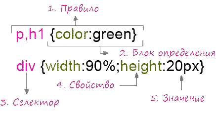

CSS
Учебник CSSCSS синтаксис
Таблицы стилей состоят из набора правил.
Каждое правило состоит из одного или нескольких селекторов и блока определения, выделяющегося фигурными скобками.
Блок определения может содержать одно или несколько свойств отделенных точкой с запятой (;) (после последнего свойства точка с запятой необязательна).
Каждое свойство должно иметь значение отделенное двоеточием (:).

CSS комментарии
Таблицы стилей могут содержать комментарии.
Комментарии используются для создания пояснений.
Комментарии полностью игнорируются браузером при разборе таблиц стилей.
В CSS комментарии начинаются с "/*", и заканчиваются "*/", например:
/* Правило перекрасит абзацы HTML документа
в зеленый цвет */
p {color:green;}
Обратите внимание: разбираться в коде с пояснениями намного проще, так что старайтесь использовать пояснения как можно чаще.